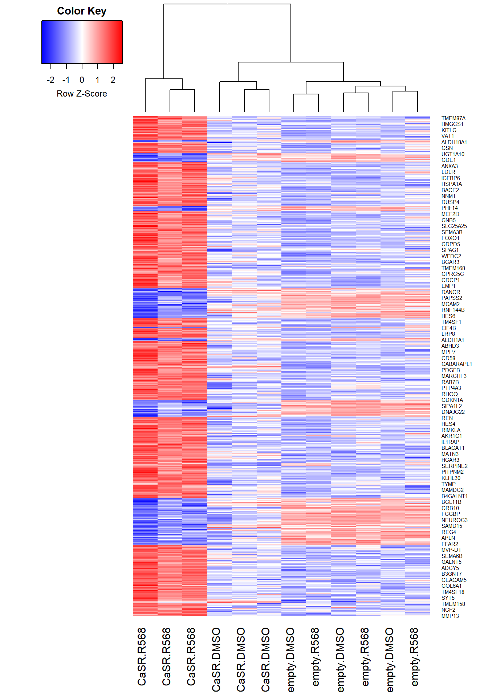

browseVignettes("edgeR")
browseVignettes("limma")CaSR-R568 RNA-seq
Studying the transcriptome effect of Calcium sensing receptor positive modulator R568 by RNA-seq.
Tutorials followed: Law et al. RNA-seq analysis is easy as 1-2-3 with limma, Glimma and edgeR.
Data import
Download raw count from GSE140984.
Import
counts <- read.delim(list.files(pattern = ".tsv"))
rownames(counts) <- counts[,1] # first column is Ensembl gene ID
counts <- counts[,-1]
head(counts) EK02001 EK02002 EK02003 EK02004 EK02005 EK02006 EK02007
ENSG00000223972.5 2 0 0 0 0 1 0
ENSG00000227232.5 0 1 2 2 0 2 1
ENSG00000278267.1 2 4 5 5 3 1 2
ENSG00000243485.5 0 0 0 0 0 0 0
ENSG00000284332.1 0 0 0 0 0 0 0
ENSG00000237613.2 0 0 0 0 0 0 0
EK02008 EK02009 EK02010 EK02011 EK02012
ENSG00000223972.5 1 0 1 0 0
ENSG00000227232.5 0 0 0 0 0
ENSG00000278267.1 2 6 0 4 4
ENSG00000243485.5 0 0 0 0 0
ENSG00000284332.1 0 0 0 0 0
ENSG00000237613.2 0 0 0 0 0Make sample information
samples <- data.frame(
factor(c(rep("empty", 6), rep("CaSR", 6))),
factor(c(rep(c(rep("DMSO", 3), rep("R568", 3)), 2)))
)
rownames(samples) <- colnames(counts)
colnames(samples) <- c("GFP", "treatment")
samples$group <- factor(paste0(samples$GFP, ".", samples$treatment))
samples$GFP <- relevel(samples$GFP, "empty")
samples GFP treatment group
EK02001 empty DMSO empty.DMSO
EK02002 empty DMSO empty.DMSO
EK02003 empty DMSO empty.DMSO
EK02004 empty R568 empty.R568
EK02005 empty R568 empty.R568
EK02006 empty R568 empty.R568
EK02007 CaSR DMSO CaSR.DMSO
EK02008 CaSR DMSO CaSR.DMSO
EK02009 CaSR DMSO CaSR.DMSO
EK02010 CaSR R568 CaSR.R568
EK02011 CaSR R568 CaSR.R568
EK02012 CaSR R568 CaSR.R568Make gene annotation
ensembl <- substr(rownames(counts), 1, 15)
library(org.Hs.eg.db)
symbol <- mapIds(org.Hs.eg.db,
keys = ensembl,
column = "SYMBOL",
keytype = "ENSEMBL")
entrez <- mapIds(org.Hs.eg.db,
keys = ensembl,
column = "ENTREZID",
keytype = "ENSEMBL")
genes <- data.frame(symbol = symbol,
entrezid = entrez)
rownames(genes) <- rownames(counts)
head(genes) symbol entrezid
ENSG00000223972.5 <NA> <NA>
ENSG00000227232.5 <NA> <NA>
ENSG00000278267.1 MIR6859-1 102466751
ENSG00000243485.5 <NA> <NA>
ENSG00000284332.1 MIR1302-2 100302278
ENSG00000237613.2 FAM138A 645520Make DGEList object and preprocess
library(edgeR)
dge <- DGEList(counts = counts,
samples = samples,
genes = genes)
dim(dge)[1] 58785 12Filter low count genes and genes without annotations
keep <- filterByExpr(dge, group = samples$group)
summary(keep) Mode FALSE TRUE
logical 43690 15095 hasannot <- rowSums(is.na(dge$genes)) == 0
summary(hasannot) Mode FALSE TRUE
logical 22736 36049 dge <- dge[keep & hasannot, , keep.lib.sizes = FALSE]
dim(dge)[1] 13400 12TMM normalization
par(mfrow = c(1,2))
log2cpm <- cpm(dge, log = TRUE)
boxplot(log2cpm, las = 2) # before normalization, not much variation
dge <- normLibSizes(dge) # newer function name for calcNormFactors
log2cpm <- cpm(dge, log = TRUE)
boxplot(log2cpm, las = 2) # after normalizationExamine MD plots of each samples
par(mfrow = c(3,4))
for (i in 1:12){
plotMD(log2cpm, column = i)
abline(h = 0, col = "red", lty = 2, lwd = 2)
} # The counts are not too spread out from center indicating good normalizationData exploration
Unsupervised clustering by MDS plot
par(mfrow = c(1,1))
points <- c(15,16,0,1)
colors <- c("purple", "red", "gray", "green")
plotMDS(log2cpm,
labels = samples$group,
col = colors[samples$group]) # We can see separations of CaSR+ samplesMake design matrix according to group
design <- model.matrix(~ 0 + samples$group)
colnames(design) <- levels(samples$group)
design CaSR.DMSO CaSR.R568 empty.DMSO empty.R568
1 0 0 1 0
2 0 0 1 0
3 0 0 1 0
4 0 0 0 1
5 0 0 0 1
6 0 0 0 1
7 1 0 0 0
8 1 0 0 0
9 1 0 0 0
10 0 1 0 0
11 0 1 0 0
12 0 1 0 0
attr(,"assign")
[1] 1 1 1 1
attr(,"contrasts")
attr(,"contrasts")$`samples$group`
[1] "contr.treatment"Estimate dispersion
dge <- estimateDisp(dge, design, robust = TRUE)
plotBCV(dge) # Dispersion trend increases with counts then smooth out as expectedSqueeze dispersion to trend by QL (quasi-likelihood) approach to improve power
fit <- glmQLFit(dge, design, robust = TRUE)
plotQLDisp(fit)Differential expression
edgeR pipeline
We test CaSR+ samples only
con <- makeContrasts(treated = CaSR.R568 - empty.DMSO,
untreated = CaSR.DMSO - empty.DMSO,
levels = design)
qlf <- glmQLFTest(fit, contrast = con)
topTags(qlf)Coefficient: LR test on 2 degrees of freedom
symbol entrezid logFC.treated logFC.untreated logCPM
ENSG00000196352.15 CD55 1604 3.082078 0.40335582 6.1508544
ENSG00000109610.5 SOD3 6649 4.947141 -0.58564694 4.1988254
ENSG00000163762.6 TM4SF18 116441 5.529888 0.67437696 -0.5892991
ENSG00000143839.14 REN 5972 5.557782 0.64833926 5.3044671
ENSG00000265107.2 GJA5 2702 3.040164 0.33678311 2.6734750
ENSG00000173546.7 CSPG4 1464 2.665717 0.07895494 4.7507890
ENSG00000116741.7 RGS2 5997 2.497201 -0.32472159 4.9542767
ENSG00000213626.12 LBH 81606 5.473781 0.70922934 2.1409293
ENSG00000184371.13 CSF1 1435 3.588479 0.25092146 2.0041255
ENSG00000173175.14 ADCY5 111 4.162491 -0.23295025 2.2818813
F PValue FDR
ENSG00000196352.15 359.34689 1.302890e-11 1.028561e-07
ENSG00000109610.5 352.62774 1.535166e-11 1.028561e-07
ENSG00000163762.6 84.82781 1.129017e-10 5.042943e-07
ENSG00000143839.14 218.81740 2.654305e-10 8.891921e-07
ENSG00000265107.2 158.06075 1.789104e-09 4.794798e-06
ENSG00000173546.7 150.83924 2.394525e-09 5.347772e-06
ENSG00000116741.7 144.46444 3.085810e-09 5.907122e-06
ENSG00000213626.12 139.75595 4.434347e-09 7.427532e-06
ENSG00000184371.13 133.26809 5.014537e-09 7.466088e-06
ENSG00000173175.14 127.85544 6.453825e-09 8.648126e-06summary(decideTests(qlf)) LR test on 2 degrees of freedom
NotSig 12871
Sig 529plotMD(qlf)tr <- glmTreat(fit, contrast = con[,1], lfc = 1) # Test for genes with log2FC > 1 for CaSR.R568
topTags(tr)Coefficient: 1*CaSR.R568 -1*empty.DMSO
symbol entrezid logFC unshrunk.logFC logCPM
ENSG00000196352.15 CD55 1604 3.082078 3.082362 6.1508544
ENSG00000109610.5 SOD3 6649 4.947141 4.950621 4.1988254
ENSG00000143839.14 REN 5972 5.557782 5.560256 5.3044671
ENSG00000163762.6 TM4SF18 116441 5.529888 5.699063 -0.5892991
ENSG00000213626.12 LBH 81606 5.473781 5.495137 2.1409293
ENSG00000265107.2 GJA5 2702 3.040164 3.043320 2.6734750
ENSG00000184371.13 CSF1 1435 3.588479 3.595571 2.0041255
ENSG00000173546.7 CSPG4 1464 2.665717 2.666300 4.7507890
ENSG00000173175.14 ADCY5 111 4.162491 4.170591 2.2818813
ENSG00000204866.8 IGFL2 147920 4.593635 4.614583 1.3222923
PValue FDR
ENSG00000196352.15 2.950016e-10 2.591162e-06
ENSG00000109610.5 3.867407e-10 2.591162e-06
ENSG00000143839.14 2.262573e-09 1.010616e-05
ENSG00000163762.6 1.242292e-08 4.161677e-05
ENSG00000213626.12 4.166943e-08 1.050410e-04
ENSG00000265107.2 4.703328e-08 1.050410e-04
ENSG00000184371.13 9.743074e-08 1.865103e-04
ENSG00000173546.7 1.403375e-07 2.107223e-04
ENSG00000173175.14 1.415299e-07 2.107223e-04
ENSG00000204866.8 1.932354e-07 2.585800e-04summary(decideTests(tr)) 1*CaSR.R568 -1*empty.DMSO
Down 10
NotSig 13321
Up 69plotMD(tr)limma-voom pipeline
v <- voom(dge, design, plot = TRUE) # genes with high count but not decrease with variance means biological variationvfit <- lmFit(v, design)
vfit <- contrasts.fit(vfit, contrasts = con)
efit <- eBayes(vfit)
plotSA(efit)topTable(efit) symbol entrezid treated untreated AveExpr F
ENSG00000196352.15 CD55 1604 3.067352 0.40189054 5.4313474 308.24478
ENSG00000109610.5 SOD3 6649 4.985474 -0.54208694 2.2389944 271.05054
ENSG00000143839.14 REN 5972 5.583567 0.62444548 3.1871119 187.91855
ENSG00000173546.7 CSPG4 1464 2.643247 0.06965275 4.2099504 126.09218
ENSG00000116741.7 RGS2 5997 2.485276 -0.32004639 4.3952274 124.49929
ENSG00000265107.2 GJA5 2702 3.020251 0.33862286 1.9987237 120.66694
ENSG00000184371.13 CSF1 1435 3.586095 0.23943873 1.0721989 93.52075
ENSG00000148671.13 ADIRF 10974 2.624742 0.72897676 2.7893577 90.29209
ENSG00000103018.16 CYB5B 80777 1.042612 0.06157945 7.5191283 81.40370
ENSG00000173175.14 ADCY5 111 4.395487 -0.07140604 0.8648382 81.01601
P.Value adj.P.Val
ENSG00000196352.15 3.548978e-11 4.755631e-07
ENSG00000109610.5 7.655526e-11 5.129203e-07
ENSG00000143839.14 6.751924e-10 3.015859e-06
ENSG00000173546.7 7.025748e-09 2.026510e-05
ENSG00000116741.7 7.565422e-09 2.026510e-05
ENSG00000265107.2 9.073923e-09 2.026510e-05
ENSG00000184371.13 3.950730e-08 7.562827e-05
ENSG00000148671.13 4.830851e-08 8.091675e-05
ENSG00000103018.16 8.719770e-08 1.125679e-04
ENSG00000173175.14 8.959362e-08 1.125679e-04summary(decideTests(efit)) treated untreated
Down 193 7
NotSig 12742 13393
Up 465 0tfit <- treat(vfit, lfc = 1)
topTreat(tfit, coef = 1) symbol entrezid logFC AveExpr t P.Value
ENSG00000109610.5 SOD3 6649 4.985474 2.238994393 15.455842 1.109233e-09
ENSG00000196352.15 CD55 1604 3.067352 5.431347421 15.352673 1.189962e-09
ENSG00000143839.14 REN 5972 5.583567 3.187111872 14.412421 2.513732e-09
ENSG00000265107.2 GJA5 2702 3.020251 1.998723689 9.415117 2.983058e-07
ENSG00000213626.12 LBH 81606 5.652324 0.001291519 8.798180 6.296540e-07
ENSG00000184371.13 CSF1 1435 3.586095 1.072198929 8.770247 6.401516e-07
ENSG00000173546.7 CSPG4 1464 2.643247 4.209950420 8.649984 7.402983e-07
ENSG00000173175.14 ADCY5 111 4.395487 0.864838207 8.462230 9.392721e-07
ENSG00000148671.13 ADIRF 10974 2.624742 2.789357717 7.992650 1.697854e-06
ENSG00000138131.3 LOXL4 84171 2.838402 6.369975893 7.979539 1.727292e-06
adj.P.Val
ENSG00000109610.5 7.972748e-06
ENSG00000196352.15 7.972748e-06
ENSG00000143839.14 1.122800e-05
ENSG00000265107.2 9.993246e-04
ENSG00000213626.12 1.417142e-03
ENSG00000184371.13 1.417142e-03
ENSG00000173546.7 1.417142e-03
ENSG00000173175.14 1.573281e-03
ENSG00000148671.13 2.314571e-03
ENSG00000138131.3 2.314571e-03summary(decideTests(tfit)) treated untreated
Down 4 1
NotSig 13361 13399
Up 35 0voom with quality weights pipeline
vwts <- voomWithQualityWeights(dge, design, plot = TRUE) # big difference in quality weights between samplesvwfit <- lmFit(vwts)
vwfit <- contrasts.fit(vwfit, contrasts = con)
vwfit <- eBayes(vwfit)
topTable(vwfit) symbol entrezid treated untreated AveExpr F
ENSG00000109610.5 SOD3 6649 4.936777 -0.56164614 2.238994 357.4661
ENSG00000196352.15 CD55 1604 2.967435 0.41305396 5.431347 347.8701
ENSG00000143839.14 REN 5972 5.476634 0.70025172 3.187112 285.0994
ENSG00000265107.2 GJA5 2702 3.039117 0.36559283 1.998724 195.6607
ENSG00000173546.7 CSPG4 1464 2.606368 0.13683996 4.209950 168.3871
ENSG00000116741.7 RGS2 5997 2.364882 -0.27652462 4.395227 134.2200
ENSG00000184371.13 CSF1 1435 3.485613 0.30409081 1.072199 115.5017
ENSG00000103018.16 CYB5B 80777 1.007659 0.08433645 7.519128 108.9104
ENSG00000148671.13 ADIRF 10974 2.534308 0.77219977 2.789358 108.5031
ENSG00000157193.16 LRP8 7804 1.471241 0.08169918 8.830237 105.5538
P.Value adj.P.Val
ENSG00000109610.5 1.551301e-11 1.223111e-07
ENSG00000196352.15 1.825539e-11 1.223111e-07
ENSG00000143839.14 5.988362e-11 2.674802e-07
ENSG00000265107.2 5.585909e-10 1.871279e-06
ENSG00000173546.7 1.351906e-09 3.623107e-06
ENSG00000116741.7 5.092626e-09 1.137353e-05
ENSG00000184371.13 1.217226e-08 2.330119e-05
ENSG00000103018.16 1.708724e-08 2.599628e-05
ENSG00000148671.13 1.746019e-08 2.599628e-05
ENSG00000157193.16 2.046268e-08 2.742000e-05summary(decideTests(vwfit)) treated untreated
Down 374 8
NotSig 12275 13391
Up 751 1twfit <- treat(vwfit, lfc = 1)
topTreat(twfit, coef = 1) symbol entrezid logFC AveExpr t
ENSG00000109610.5 SOD3 6649 4.936777 2.238994393 17.746844
ENSG00000143839.14 REN 5972 5.476634 3.187111872 17.732886
ENSG00000196352.15 CD55 1604 2.967435 5.431347421 16.069519
ENSG00000265107.2 GJA5 2702 3.039117 1.998723689 12.031522
ENSG00000173546.7 CSPG4 1464 2.606368 4.209950420 10.012707
ENSG00000163762.6 TM4SF18 116441 4.935141 -2.790174580 9.790906
ENSG00000184371.13 CSF1 1435 3.485613 1.072198929 9.694764
ENSG00000213626.12 LBH 81606 5.479161 0.001291519 9.594310
ENSG00000173175.14 ADCY5 111 4.154702 0.864838207 8.736459
ENSG00000148671.13 ADIRF 10974 2.534308 2.789357717 8.607413
P.Value adj.P.Val
ENSG00000109610.5 2.297798e-10 1.561357e-06
ENSG00000143839.14 2.330384e-10 1.561357e-06
ENSG00000196352.15 7.293085e-10 3.257578e-06
ENSG00000265107.2 2.029465e-08 6.798707e-05
ENSG00000173546.7 1.566406e-07 4.197968e-04
ENSG00000163762.6 2.019803e-07 4.243956e-04
ENSG00000184371.13 2.229834e-07 4.243956e-04
ENSG00000213626.12 2.533705e-07 4.243956e-04
ENSG00000173175.14 6.844153e-07 1.019018e-03
ENSG00000148671.13 7.979604e-07 1.055968e-03summary(decideTests(twfit)) treated untreated
Down 6 0
NotSig 13354 13400
Up 40 0Compare heatmaps of 3 pipelines
library(gplots)
col <- colorpanel(1000,"blue","white","red")
topgenes1 <- rownames(topTags(qlf, n = 500))
topgenes2 <- rownames(topTable(efit, n = 500))
topgenes3 <- rownames(topTable(vwfit, n = 500))
topgenes_list <- list(topgenes1, topgenes2, topgenes3)
for (i in 1:3){
ind <- which(rownames(dge$genes) %in% topgenes_list[[i]])
heatmap.2(log2cpm[ind,],
labRow = dge$genes$symbol[ind],
labCol = samples$group,
col = col,
trace = "none",
scale = "row",
dendrogram = "column",
density.info = "none",
margins = c(7, 5),
lhei = c(2, 10))
} # some difference in gene clustering
Gene set testing
edgeR pipeline
Test GO_BP gene set
go <- goana(qlf, geneid = qlf$genes$entrezid) # it needs entrezID
gobp <- topGO(go, ontology = "BP")
topGO(go, ontology = "BP") Term Ont N DE
GO:0032501 multicellular organismal process BP 4343 267
GO:0009888 tissue development BP 1262 112
GO:0032502 developmental process BP 4011 246
GO:0048856 anatomical structure development BP 3665 229
GO:0050896 response to stimulus BP 5417 299
GO:0007275 multicellular organism development BP 2943 191
GO:0050793 regulation of developmental process BP 1579 123
GO:0051239 regulation of multicellular organismal process BP 1826 135
GO:0030154 cell differentiation BP 2641 174
GO:0048869 cellular developmental process BP 2642 174
GO:0048513 animal organ development BP 1853 135
GO:0009653 anatomical structure morphogenesis BP 1679 125
GO:0042221 response to chemical BP 2348 158
GO:0023052 signaling BP 3778 224
GO:0007154 cell communication BP 3835 226
GO:0048731 system development BP 2466 163
GO:0016477 cell migration BP 953 82
GO:0042127 regulation of cell population proliferation BP 1060 88
GO:0007155 cell adhesion BP 854 76
GO:0007166 cell surface receptor signaling pathway BP 1702 122
P.DE
GO:0032501 1.459608e-18
GO:0009888 7.128808e-17
GO:0032502 2.195832e-16
GO:0048856 7.353696e-16
GO:0050896 2.137634e-14
GO:0007275 2.767191e-14
GO:0050793 3.364977e-14
GO:0051239 7.514125e-14
GO:0030154 2.070685e-13
GO:0048869 2.144440e-13
GO:0048513 2.336838e-13
GO:0009653 5.377914e-13
GO:0042221 8.413977e-13
GO:0023052 8.653371e-13
GO:0007154 1.213426e-12
GO:0048731 1.405464e-12
GO:0016477 1.107936e-11
GO:0042127 1.196644e-11
GO:0007155 1.400137e-11
GO:0007166 1.517370e-11limma pipeline
Test 2 GO_BP gene sets for CaSR.R568
library(GO.db)
select(GO.db,
keys = c("cell migration", "cell differentiation"),
keytype = "TERM",
column = "GOID") TERM GOID
1 cell migration GO:0016477
2 cell differentiation GO:0030154Rkeys(org.Hs.egGO2ALLEGS) <- c("GO:0016477", "GO:0030154")
idx <- ids2indices(as.list(org.Hs.egGO2ALLEGS), id = v$genes$entrezid)
mroast(v, idx, design, contrast = con[,1]) # both up NGenes PropDown PropUp Direction PValue FDR PValue.Mixed
GO:0016477 953 0.1091291 0.2885624 Up 0.0005 0.0005 0.016
GO:0030154 2642 0.1377744 0.2187737 Up 0.0290 0.0290 0.036
FDR.Mixed
GO:0016477 0.0315
GO:0030154 0.0360camera(v, idx, design, contrast = con[,1]) # only cell migration significant NGenes Direction PValue FDR
GO:0016477 953 Up 0.0002131288 0.0004262576
GO:0030154 2642 Up 0.0590823820 0.0590823820fry(v, idx, design, contrast = con[,1]) # both up NGenes Direction PValue FDR PValue.Mixed FDR.Mixed
GO:0016477 953 Up 0.000412588 0.0008251761 9.181106e-07 1.836221e-06
GO:0030154 2642 Up 0.019719621 0.0197196214 8.939867e-06 8.939867e-06barcodeplot(efit$t[,1], index = idx$`GO:0016477`)